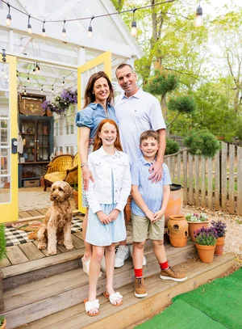
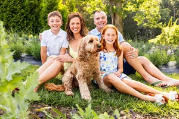
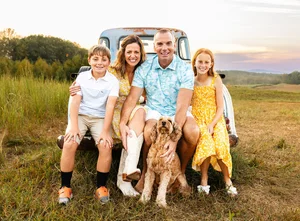
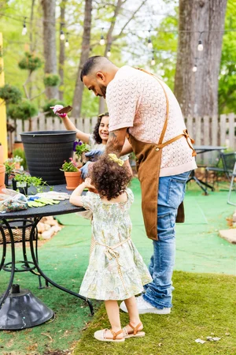
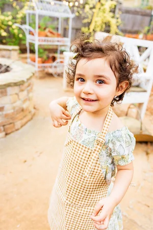
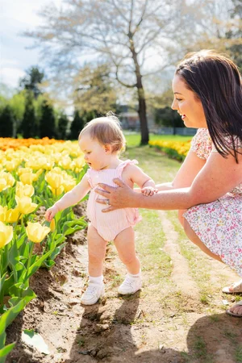
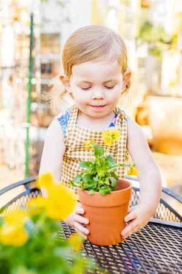
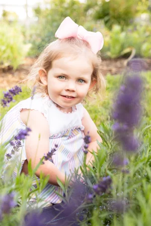
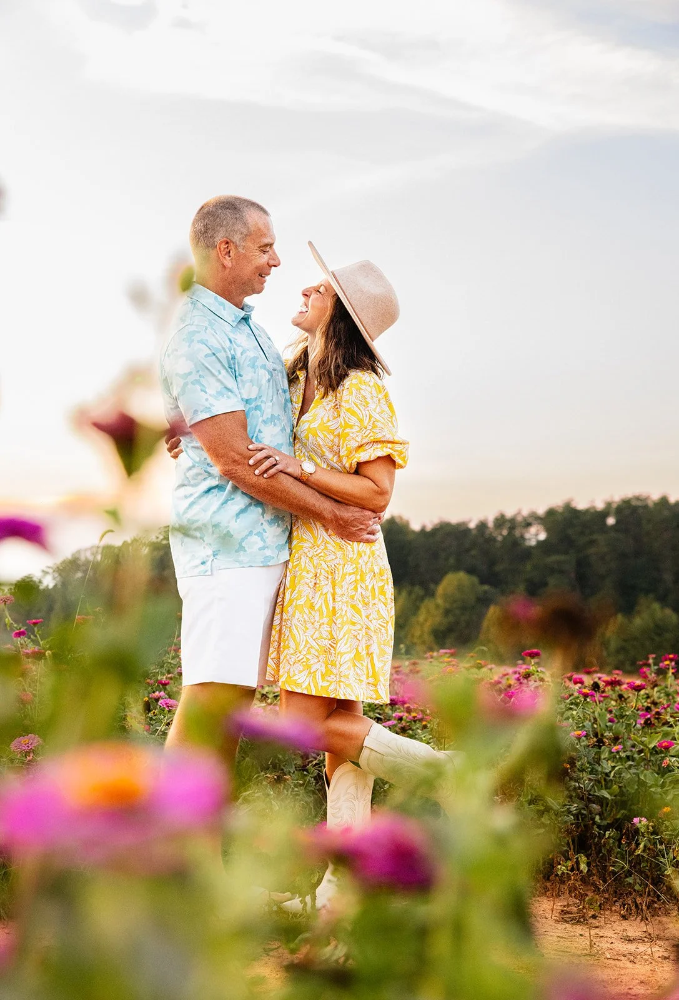
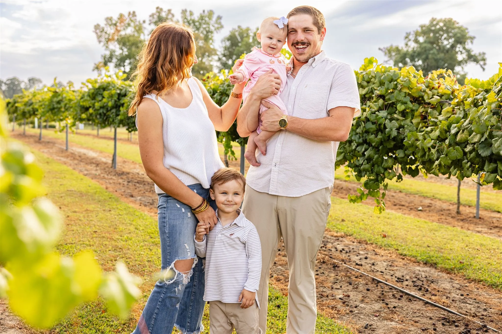

For the Growing Families in The Triad
All Four Seasons Experience
A year-long photography experience for families who want to slow down & truly remember each season of life.



All Four Seasons is designed for families who want more than a quick mini session of “smile & pose.” Instead of booking individual sessions throughout the year, families enroll once & enjoy four thoughtfully planned photography experiences — one in each season.
Each session includes a small, seasonal experience — whether that’s planting your own spring blooms, sipping lemonade on a summer evening, or cozying up together as the year winds down.
These moments help kids relax, parents breathe, & photographs feel natural, playful, & real.
It’s simple, intentional, & created to take the stress out of planning while preserving your family just as you are.


The Idea Behind All Four Seasons
Children change quickly — sometimes in ways we don’t even notice until we look back.
A new toothless smile, a few more precious freckles, a little more independence, a little less needing to be held.
All Four Seasons was created to honor that change without asking families to slow life down to document it.
By committing once at the beginning of the year, families don’t have to re-decide, re-book, or rush to find availability. The focus stays where it should be — on connection, presence, & creating images that feel like real memories, not staged ones.



Little Hannah 2024 through 2025, growing from just a little toddler into a 3 year old big sister!
Get Your Name on the List TodayWhat’s Included
The All Four Seasons experience includes four 20-minute sessions, thoughtfully spaced throughout the year.
🌸 Spring Session
☀️ Summer Session
🍂 Fall Session
❄️ Christmas Session
With each session including:
*20-minute guided photography experience
*20+ high-resolution images delivered via an online gallery with an online professional printing store
*Covered venue fees, so families never have to worry about permits or additional location costs
*Full printing rights
Families also have the option to add on the Ember & Evergreen book, a custom-designed heirloom album created at the end of the year — allowing the full story of your year to be told in one tangible keepsake.
The Investment
The All Four Seasons collection is $925, offering 20+ high-resolution images per session, covered venue fees, plus the option to add an Ember & Evergreen keepsake book after your final session.
Each 20-minute session is a little adventure through the year.
It’s a chance to pause, play, & capture the magic of your family’s story, one season at a time.
Payment plans are offered through the year.

Join the Caitlin Gregory Photography
All Four Seasons Family in 2026

Serving BOTH The
Greensboro Area &
Sampson County
for the AFS 2026 Year